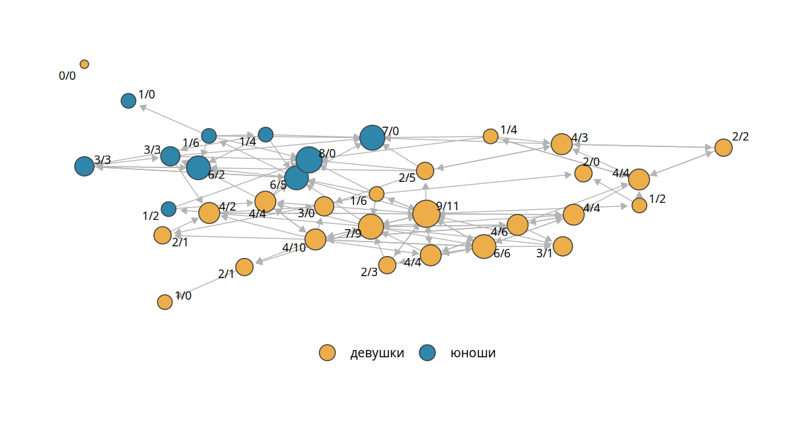
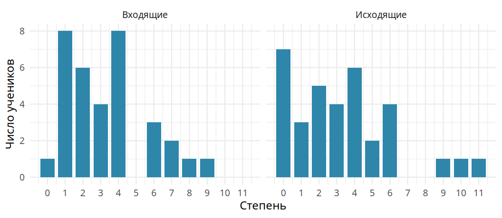
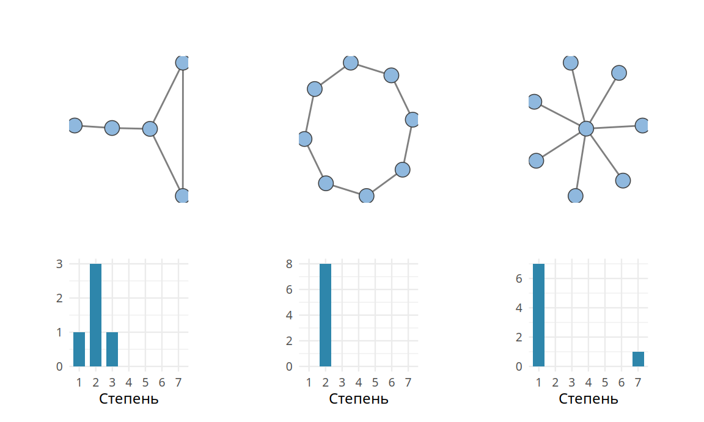
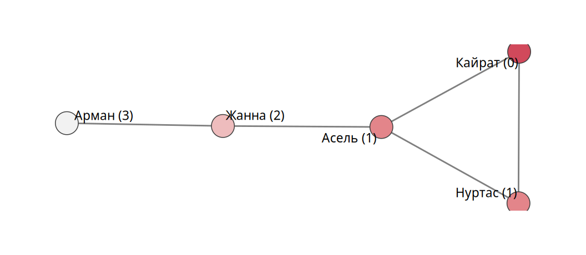

2 Элементы теории графов
Понятия, с помощью которых описывают сети, удобно разделить на три группы. Одни описывают отдельные узлы, другие описывают связи, третьи описывают сеть целиком. В этой главе мы пойдём от частного к целому. Начнём со степени узла, затем перейдём к средней степени и распределению степеней, плотности и расстояниям. Эти понятия станут строительным материалом для всех следующих глав.
Примеры будут двух видов. Сеть «Кайрат и Нуртас» из главы 1 достаточно мала, чтобы всё посчитать вручную. Вторым примером станет реальная сеть дружбы одного 11 класса школы в Астане. Ученикам раздали анкету со списком одноклассников и попросили отметить друзей. В классе 34 ученика, они отметили 113 дружеских связей. Связь направлена от того, кто назвал, к тому, кого назвали.
2.1 Обозначения
Сеть мы обозначаем буквой \(G\) (от graph) и записываем как \(G = (V, E)\), где \(V\) означает множество узлов, а \(E\) означает множество связей. Вертикальные скобки обозначают размер множества, то есть число его элементов. Запись \(|V|\) означает число узлов, запись \(|E|\) означает число связей. В сети «Кайрат и Нуртас» \(|V| = 5\) и \(|E| = 5\).
Отдельные узлы мы обозначаем индексами \(i\) и \(j\). Связь между ними записывается парой \((i, j)\) или через элемент матрицы смежности \(a_{ij}\). Запись \(a_{ij} = 1\), как и \((i, j) \in E\), означает, что связь есть. Знак \(\in\) читается «принадлежит»: пара \((i, j)\) входит в множество связей \(E\). Запись \(a_{ij} = 0\) или \((i, j) \notin E\) («не принадлежит») означает, что связи нет. Атрибуты узлов записываются с индексом узла: \(sex_i = \text{female}\) означает, что узел \(i\) соответствует девушке. Число узлов часто обозначают также буквой \(N\).
ЗаметкаОпределение
Размером сети называют число её узлов \(|V|\).
2.2 Степень узла
Самая простая характеристика узла показывает, сколько у него связей.
ЗаметкаОпределение
Степенью узла (degree) \(d_i\) называют число связей узла \(i\). В ненаправленной сети степень равна числу соседей узла.
В сети «Кайрат и Нуртас» степени равны: \(d_{\text{Кайрат}} = 2\), \(d_{\text{Нуртас}} = 2\), \(d_{\text{Асель}} = 3\), \(d_{\text{Жанна}} = 2\), \(d_{\text{Арман}} = 1\). В больших сетях вместо имён удобнее номера узлов: \(d_1 = 2\), \(d_5 = 1\).
Сложим степени всех узлов: \(2 + 2 + 3 + 2 + 1 = 10\). Связей в сети вдвое меньше. Причину легко увидеть на сети из двух узлов и одной связи. Степень каждого узла равна единице, сумма степеней равна двум. Каждая связь учитывается дважды: один раз у одного своего конца, второй раз у другого. Поэтому в ненаправленной сети
\[ |E| = \frac{1}{2} \sum_{i=1}^{N} d_i. \tag{2.1}\]
Формулу читают так: число связей \(|E|\) равно половине суммы степеней всех узлов. Знак \(\sum\) (греческая буква «сигма») обозначает сумму. Надписи под ним и над ним задают пределы: \(i = 1\) внизу означает, что суммирование начинается с узла номер 1, буква \(N\) наверху означает, что оно заканчивается последним узлом. Справа от знака стоит то, что складывается, то есть степень \(d_i\) очередного узла. Поэтому \(\sum_{i=1}^{N} d_i\) есть короткая запись суммы \(d_1 + d_2 + \dots + d_N\). Множитель \(\frac{1}{2}\) делит результат пополам. Для сети «Кайрат и Нуртас» получаем \(\frac{1}{2} \cdot 10 = 5\).
2.2.1 Входящая и исходящая степени
В направленной сети узел может отправлять связи и получать их. Поэтому у каждого узла две степени. Исходящая степень (out-degree) \(d_i^{\text{out}}\) равна числу связей, которые узел отправил. Входящая степень (in-degree) \(d_i^{\text{in}}\) равна числу связей, которые узел получил. Иногда используют общую степень \(d_i^{\text{total}} = d_i^{\text{in}} + d_i^{\text{out}}\).
На рис. 2.1 показана школьная сеть. Размер узла соответствует входящей степени: сколько одноклассников назвали ученика другом. Подпись показывает обе степени через косую черту: сначала входящую, затем исходящую.
Внимание одноклассников распределено неравномерно. Одни ученики получили много номинаций, другие одну или две. Неравенство степеней можно осмыслять как неравное распределение социального капитала внутри класса. Одна из учениц получила 9 номинаций и сама назвала 11 друзей.
Сравнение двух степеней показывает ещё одну деталь. Юноша в центре сети получил 8 номинаций, но сам не назвал никого. Такой разрыв можно объяснить по-разному. Ученики по-разному понимают дружбу. Друзья ученика могут учиться в другом классе. Подросток может не желать показывать привязанность. Самое простое объяснение техническое: ученика могло не быть в день опроса. Отсутствующий ученик никого не называет, поэтому его исходящая степень равна нулю. Номинации от одноклассников он при этом получает. Исходящую степень контролирует сам респондент. Входящая степень складывается из чужих ответов. Сетевые данные очень чувствительны к пропущенным ответам. Нули в исходящих степенях всегда стоит проверять по списку тех, кто участвовал в опросе.
В направленной сети каждая связь имеет ровно одно начало и ровно один конец. Поэтому число связей равно сумме входящих степеней и сумме исходящих степеней, делить на два не нужно:
\[ |E| = \sum_{i=1}^{N} d_i^{\text{in}} = \sum_{i=1}^{N} d_i^{\text{out}}. \]
Здесь две суммы по всем узлам. Первая складывает входящие степени, вторая складывает исходящие. Знаки равенства утверждают, что обе суммы дают одно и то же число, равное числу связей. Надписи in и out над буквой \(d\) лишь указывают, о какой степени идёт речь. Это не показатели степени: возводить ничего не нужно.
В школьной сети обе суммы равны 113.
2.2.2 Смежность, инцидентность, окрестность
В учебниках встречаются ещё три близких понятия. Два узла называют смежными (adjacent), если между ними есть связь. Узел и связь называют инцидентными, если узел является одним из концов связи. Окрестностью (neighborhood) узла называют множество его соседей. Иногда в окрестность включают и связи между соседями. Все три понятия описывают одно и то же явление с разных сторон. Степень узла в ненаправленной сети равна размеру его окрестности и числу инцидентных ему связей.
2.3 Средняя степень и распределение степеней
Степень меняется от узла к узлу, то есть является переменной. Переменные описывают мерами центральной тенденции и разброса. Начнём со среднего. Средняя степень показывает, сколько связей у типичного узла:
\[ \bar d = \frac{1}{N}\sum_{i=1}^{N} d_i = \frac{2|E|}{N}. \tag{2.2}\]
Черта над буквой обозначает среднее значение: \(\bar d\) читается «d с чертой». Первое равенство повторяет обычное определение среднего. Степени всех узлов складываются, сумма делится на число узлов \(N\). Множитель \(\frac{1}{N}\) и есть это деление. Второе равенство получается, если подставить сумму степеней из формулы 2.1: она равна \(2|E|\).
В сети «Кайрат и Нуртас» средняя степень равна \(10 / 5 = 2\): в среднем у каждого два друга.
В направленной сети можно было бы ожидать двух разных средних, для входящих и для исходящих степеней. На деле они всегда совпадают. Каждая отправленная связь кем-то получена. Суммы входящих и исходящих степеней равны \(|E|\), а делим мы на одно и то же число узлов:
\[ \bar d^{\text{in}} = \bar d^{\text{out}} = \frac{|E|}{N}. \]
Формула читается так: средняя входящая степень равна средней исходящей. Обе равны числу связей, деленному на число узлов. Двойки в числителе здесь нет. В направленной сети каждая связь добавляет единицу к одной входящей степени (у получателя) и к одной исходящей (у отправителя).
В школьной сети обе средние равны \(113 / 34 \approx 3{,}32\). Распределения при этом разные, как мы сейчас увидим.
2.3.1 Распределение степеней
Посчитаем, как часто встречается каждая степень. В сети «Кайрат и Нуртас» один узел имеет степень 1, три узла имеют степень 2, один узел имеет степень 3. Если выбрать узел случайно, он окажется Арманом со степенью 1 с вероятностью \(1/5\).
ЗаметкаОпределение
Распределением степеней (degree distribution) называют вероятности \(p_d\) того, что случайно выбранный узел имеет степень \(d\).
Для сети «Кайрат и Нуртас» \(p_1 = 1/5\), \(p_2 = 3/5\), \(p_3 = 1/5\). Сумма вероятностей, как и положено, равна единице. Распределение симметрично относительно степени 2. У направленной сети два распределения: входящих и исходящих степеней. Для школьной сети они показаны на рис. 2.2.

Оба распределения скошены вправо: у большинства учеников степень невелика, у немногих она большая. Исходящие степени скошены сильнее. Нулевая исходящая степень у 7 учеников, а трое назвали девять и больше друзей. Входящая степень равна нулю лишь у 1 ученицы. Почти каждый в классе хотя бы для кого-то оказался другом. Входящие степени распределены равномернее исходящих. Пропуск значений (никто не получил ровно пять номинаций) объясняется малым числом наблюдений.
2.3.2 Форма распределения и структура сети
В большой сети невозможно разглядеть, кто с кем связан. Распределение степеней посчитать легко. Оно многое говорит о структуре. На рис. 2.3 сопоставлены три сети. В сети слева степени разные, но распределение симметрично. В кольце у всех узлов одна и та же степень. В звезде один центральный узел связан со всеми, а остальные связаны только с ним. Её распределение предельно скошено вправо.

Скошенность вправо обычно указывает на иерархичность сети. Много узлов с малой степенью соседствуют с привилегированным меньшинством узлов с большой степенью. Так устроено авиасообщение в Казахстане: из Семея в Уральск обычно летят с пересадкой в Астане или Алматы. Так устроены социальные платформы: подписка ничего не стоит, поэтому у немногих блогеров миллионы подписчиков, а у обычного пользователя сотня-другая друзей. В школьных опросах похожая разница видна между отношениями. Сети дружбы скошены умеренно. Номинации на вопрос «кто в школе популярен» сосредоточены на пяти-шести людях: популярность порождает популярность. Сети помощи с домашним заданием тоже иерархичны. К тому, кто разбирается в предмете, идут многие.
2.3.3 Степени и матрица смежности
Для больших сетей степени считают через матрицу смежности. Каждая единица в строке узла \(i\) означает одну его связь. Поэтому степень узла равна сумме его строки:
\[ d_i = \sum_{j=1}^{N} a_{ij}. \]
Номер строки \(i\) здесь закреплён, а суммирование идёт по второму индексу \(j\), то есть по столбцам. Формула сокращённо записывает сумму \(a_{i1} + a_{i2} + \dots + a_{iN}\) всех элементов строки \(i\).
В матрице сети «Кайрат и Нуртас» (табл. 1.2 в главе 1) строка Асель содержит три единицы, её степень равна трём. Матрица ненаправленной сети симметрична, поэтому суммы по столбцам дают тот же результат. В направленной сети строка соответствует отправителю, столбец получателю. Сумма строки даёт исходящую степень, сумма столбца даёт входящую:
\[ d_i^{\text{out}} = \sum_{j=1}^{N} a_{ij}, \qquad d_j^{\text{in}} = \sum_{i=1}^{N} a_{ij}. \]
Обе формулы складывают единицы матрицы, но в разных направлениях. В первой закреплена строка \(i\), суммирование идёт по столбцам: так считаются связи, которые узел \(i\) отправил. Во второй закреплён столбец \(j\), суммирование идёт по строкам: так считаются связи, которые узел \(j\) получил.
Программы для анализа сетей считают степени именно так.
2.4 Плотность
Сколько связей может быть в сети из \(N\) узлов? Ответ удобно найти по матрице смежности. В ней \(N^2\) клеток. Диагональные клетки соответствуют связям узла с самим собой. Их мы исключаем: с самим собой не дружат. Остаётся \(N^2 - N\) клеток. В ненаправленной сети матрица симметрична, поэтому каждая связь записана дважды. Максимальное число связей равно
\[ |E|_{\max} = \frac{N(N-1)}{2} \]
для ненаправленной сети и \(N(N-1)\) для направленной. Сеть, в которой реализованы все возможные связи, называют полным графом.
Формула читается так: максимальное число связей равно числу узлов, умноженному на число узлов без единицы, деленному пополам. Множитель \(N - 1\) появляется потому, что каждый узел может быть связан со всеми, кроме себя. Деление на два убирает двойной счёт: связь Кайрата с Нуртасом и связь Нуртаса с Кайратом есть одна и та же связь. Для пяти узлов получаем \(5 \cdot 4 / 2 = 10\). В направленной сети это разные связи, поэтому делить на два не нужно.
ЗаметкаОпределение
Плотностью (density) сети называют долю реализованных связей среди всех возможных: \(D = |E| / |E|_{\max}\).
В сети «Кайрат и Нуртас» возможны \(5 \cdot 4 / 2 = 10\) связей. Реализовано пять, поэтому плотность равна \(0{,}5\). В школьной сети возможны \(34 \cdot 33 = 1122\) направленных связей. Реализовано 113, плотность равна 0,101. Ученик называет другом примерно каждого десятого одноклассника.
Плотность тесно связана со средней степенью. Из формулы 2.2 следует, что в ненаправленной сети \(D = \bar d / (N - 1)\). Средняя степень показывает, сколько связей у типичного узла. Плотность показывает, какую долю возможных партнёров он выбрал. В больших сетях плотность почти всегда мала. Даже очень общительный человек знаком с ничтожной долей жителей своей страны.
2.5 Пути и расстояния
Интуитивно ясно, что в сети одни узлы ближе друг к другу, чем другие. Кайрат лично знаком с Нуртасом и Асель. С Жанной он знаком через Асель, с Арманом через Асель и Жанну. Естественно сказать, что Арман дальше от Кайрата, чем Нуртас. Мерой близости служит число шагов, которые нужно сделать по связям.
ЗаметкаОпределение
Путём (path) называют последовательность связей, ведущую от одного узла к другому: \((i_1, i_2), (i_2, i_3), \dots, (i_{n-1}, i_n)\). Длиной пути называют число связей в нём. Расстоянием (distance) \(dist_{ij}\) между узлами называют длину кратчайшего пути между ними. Диаметром сети называют наибольшее расстояние между её узлами.
Запись пути читается так: первая связь ведёт из узла \(i_1\) в узел \(i_2\), вторая ведёт из \(i_2\) в \(i_3\), далее так же до последнего узла \(i_n\). Многоточие заменяет промежуточные связи. Нижние индексы у букв \(i\) нумеруют узлы в порядке обхода. Запись \(dist_{ij}\) обозначает расстояние между узлами \(i\) и \(j\).
Между двумя узлами может быть много путей и даже несколько кратчайших. Расстояние от этого не меняется. На рис. 2.4 показаны расстояния от Кайрата до остальных: 1 до Нуртаса и Асель, 2 до Жанны, 3 до Армана. Наибольшее расстояние в сети тоже равно трём, поэтому её диаметр равен 3.

В направленной сети путь идёт только по стрелкам. Расстояние от \(i\) до \(j\) может отличаться от расстояния от \(j\) до \(i\). Бывает, что из одного узла в другой вообще нельзя попасть. Тогда расстояние считают бесконечным. В школьной сети 289 упорядоченных пар учеников недостижимы друг для друга. Среди достижимых пар наибольшее расстояние равно 7, среднее равно 3,1. Программы обычно молча пропускают недостижимые пары при расчёте диаметра и среднего расстояния. Об этом нужно помнить при сравнении сетей.
С расстояниями связана известная идея «шести рукопожатий». В 1960-е годы Стэнли Милгрэм просил случайных жителей США переслать письмо незнакомому адресату через цепочку знакомых. Дошедшие цепочки имели в среднем около шести звеньев (Travers и Milgram 1969 г.). Речь здесь о среднем расстоянии, а не о диаметре. На данных Facebook 2011 года среднее расстояние между пользователями оказалось около 4,7 (Backstrom и др. 2012 г.). В главе 3 расстояния станут основой для центральности по близости.
2.6 В R
Функция degree() возвращает именованный вектор степеней. Аргумент mode выбирает входящие ("in"), исходящие ("out") или общие ("all") степени. Функция table() превращает вектор в распределение:
degree(toy)
table(degree(toy))
degree(school, mode = "in")Характеристики узлов удобно собрать в таблицу и присоединить к атрибутам узлов. Тогда сетевые характеристики можно сравнивать между группами:
nodes <- igraph::as_data_frame(school, what = "vertices") %>%
mutate(d_in = degree(school, mode = "in"),
d_out = degree(school, mode = "out"))
nodes %>%
group_by(sex) %>%
summarise(across(c(d_in, d_out), mean))Столбцам лучше давать латинские имена без пробелов. Имена вроде входящая степень приходится всякий раз заключать в обратные кавычки.
Плотность, расстояния и диаметр:
edge_density(school)
distances(toy, v = "Кайрат")
diameter(toy)
mean_distance(school) # только по достижимым парам2.7 Вопросы и упражнения
- В сеть «Кайрат и Нуртас» добавили связь между Кайратом и Арманом. Найдите новые степени, среднюю степень, плотность и диаметр.
- Объясните, почему средняя входящая и средняя исходящая степени направленной сети всегда равны. Верно ли то же самое для медиан?
- Нарисуйте направленную сеть из трёх узлов, в которой распределение исходящих степеней скошено влево. Как выглядит распределение её входящих степеней?
- Докажите, что в ненаправленной сети \(D = \bar d / (N - 1)\). Какая формула верна для направленной сети?
- В школьной сети у 7 учеников нулевая исходящая степень. Предложите два объяснения. Какие данные помогли бы выбрать между ними?